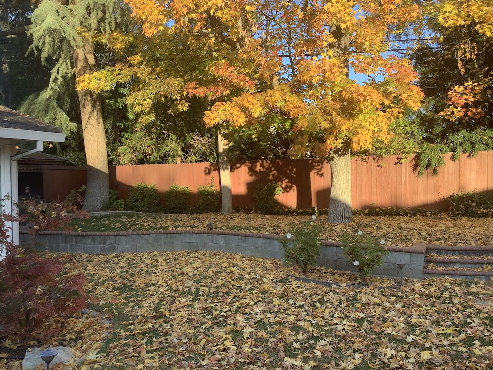

In this project I stitch together many photographs to create larger composite images
The first step of this project was shooting and digitizing images to use for the warping and mosaicing. Below are some of the images I used for testing.
|  | |||
|---|---|---|---|
I calculated Homographies using the formula formula p' = Hp, where H is a 3x3 matrix with 8 degrees of freedom. In this project I defined a set of correspondences between the images using a simple ginput tool in python. Using these corrdinates and homograph matrix I then used inverse warping and interpolation to determine the values of these coordinates of the warped polygon.
Onced I finished the steps above I moved on to integrating them into a mosaic. I annoted 4 pooints on the images and calculated the homography matrix. I then warped the left image to fit the right images. I then blended to make the transition smoother.
***The other two examples of the mosiac are below in the results section.
I started out this section by using the provided starter code harris.py to detect all the corners in each image. I think corners serve as good indicators of various important features in the images which allows for accurate matching.
Once I have the point from harris I had to reduce them making sure they were still evenly spread arount the image. I did this by calculating the radiusa between every point to other points. I kept the points with the highest corner values retrospectivly with there neighbors. I ended up keeping the largest 500 as seen below.
In this section I implement Random sample consensus (RANSAC) is an iterative method to estimate parameters of a mathematical model from a set of observed data that contains outliers, when outliers are to be accorded no influence on the values of the estimates.
The left hand column is manual done with labeling points and the other column is automatic